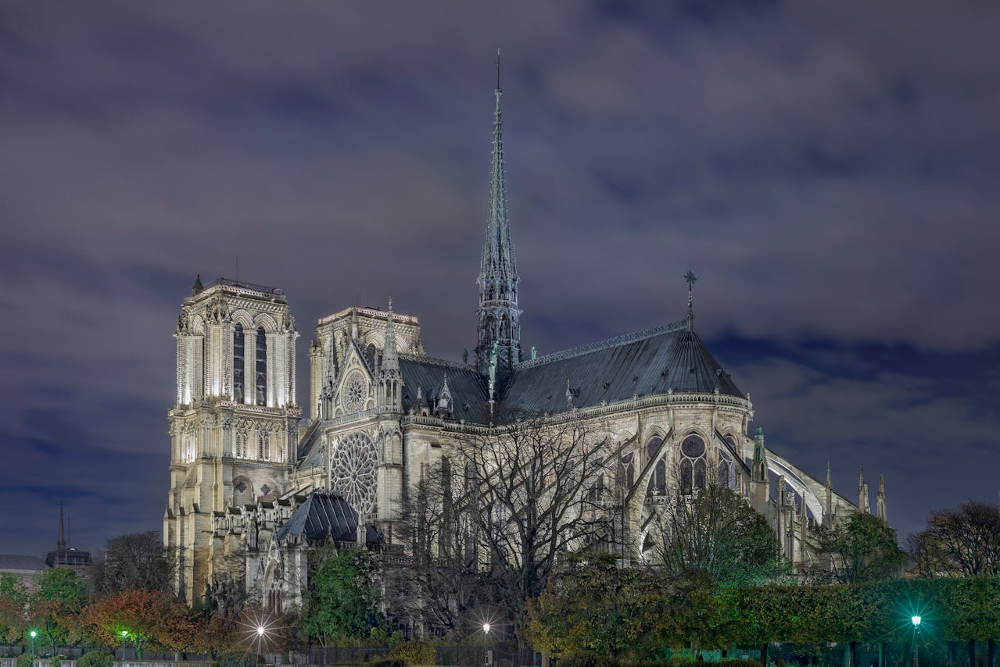
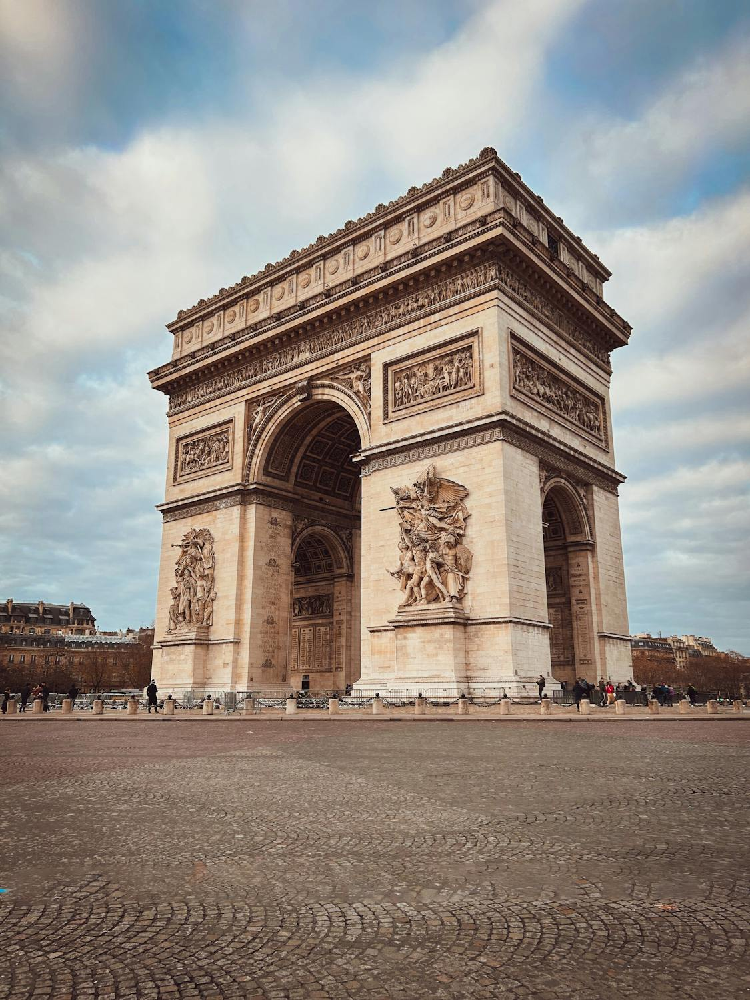
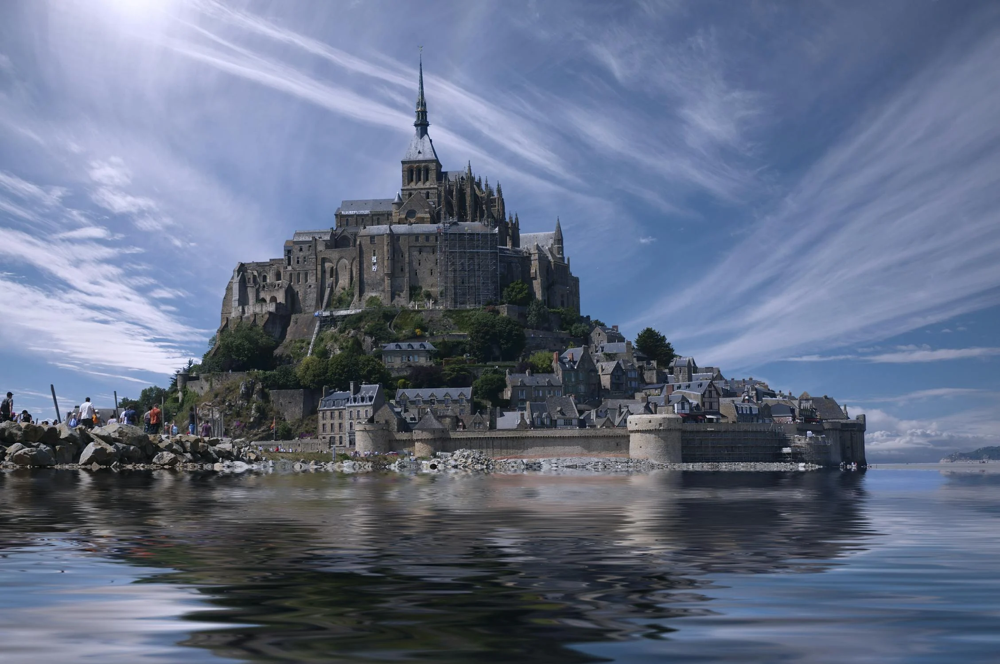
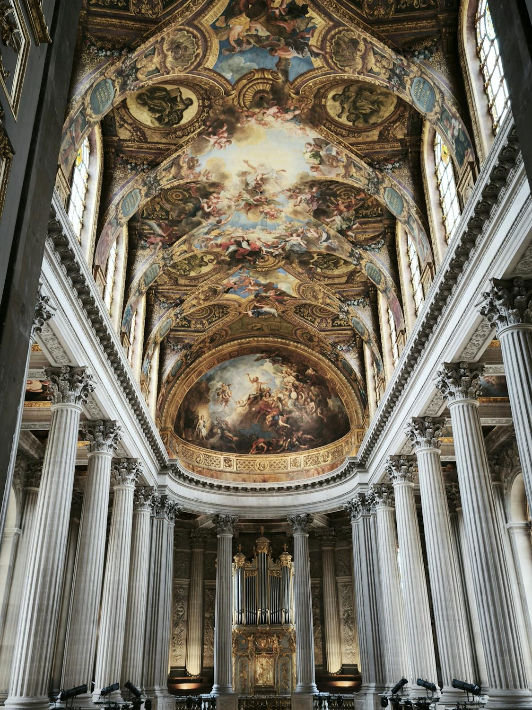
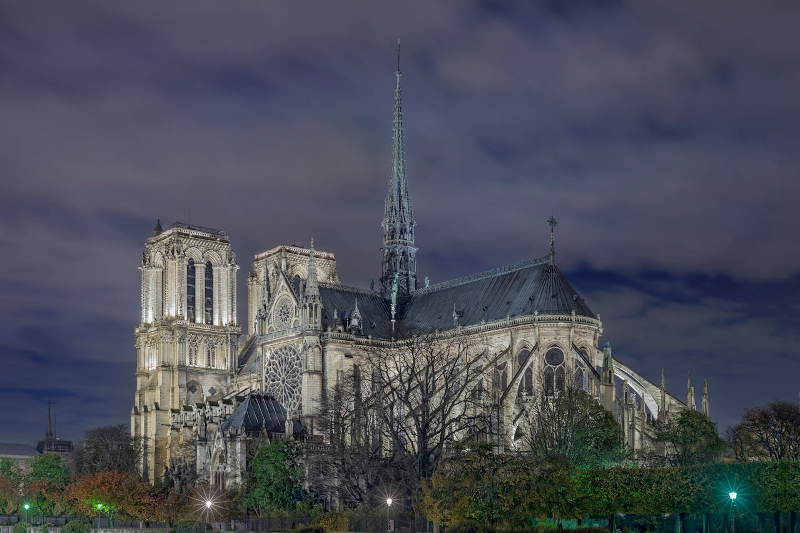
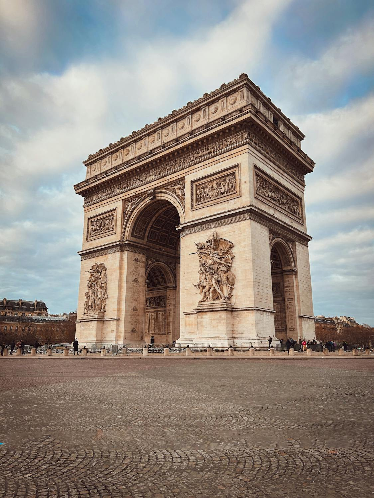
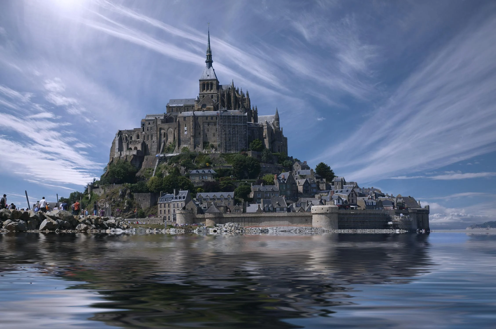
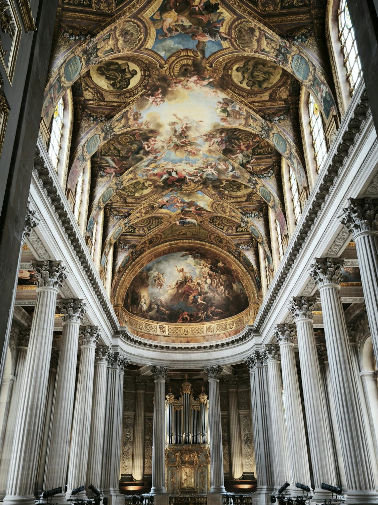

Tour Eiffel
Paris,France
Symbole emblématique de Paris, la Tour Eiffel est une structure en fer de 330 mètres de haut, construite en 1889 pour l'Exposition Universelle. Elle offre une vue imprenable sur la capitale et est l'un des monuments les plus visités au monde.
Notre Dame
Paris, France
Notre-Dame de Paris : Cathédrale gothique située sur l'île de la Cité, Notre-Dame est un chef-d'œuvre de l'architecture médiévale. Construite entre le 12e et 14e siècles, elle est célèbre pour ses gargouilles, ses vitraux et son impressionnante façade.
L'Arc de Triomphe
Paris, France
Arc de Triomphe : Situé sur la place Charles de Gaulle, cet arc monumental a été construit en l'honneur des victoires napoléoniennes. Il mesure 50 mètres de haut et est décoré de sculptures et de bas-reliefs, avec une vue panoramique depuis son sommet.
Mont Saint-Michel
Normandie, France
Mont Saint-Michel : Situé en Normandie, le Mont Saint-Michel est un îlot rocheux surmonté d'une abbaye médiévale. À marée haute, il devient une île, et à marée basse, il est relié au continent par une route.
Versaille
Paris, France
Château de Versailles : Résidence royale emblématique, le Château de Versailles, situé près de Paris, est un exemple exceptionnel d'architecture baroque. Il est célèbre pour ses vastes jardins, ses appartements royaux et la Galerie des Glaces, où le traité de Versailles a été signé en 1919.